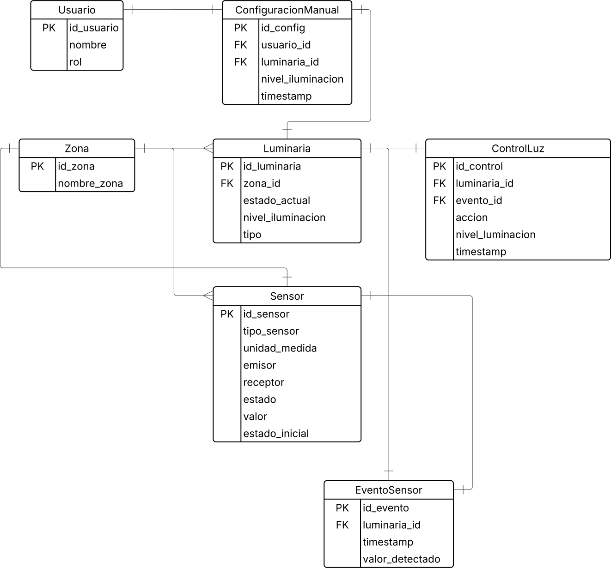

Información del Proyecto
Detalles técnicos, procesos y estructura del sistema de iluminación inteligente.
Justificación
La iluminación representa uno de los mayores consumos energéticos en edificios corporativos, especialmente en áreas de uso intensivo como oficinas, salas de reuniones y pasillos. En GreenTech Tower, donde conviven múltiples empresas con horarios flexibles, resulta ineficiente mantener las luces encendidas de forma constante.
El desarrollo de un sistema de iluminación inteligente permitirá: • Reducir significativamente el consumo eléctrico al encender luces solo cuando se detecte presencia y en función de la luz natural disponible. • Aumentar la vida útil de las luminarias, disminuyendo costos de mantenimiento. • Garantizar confort y seguridad a los usuarios, al evitar espacios oscuros o sobre iluminados. • Contribuir a la sostenibilidad del edificio, alineándose con las tendencias de Smart Buildings y Green Energy.
En resumen, la implementación de este módulo no solo optimiza recursos, sino que también mejora la experiencia de los ocupantes y refuerza la imagen del edificio como referente tecnológico y ambiental.
Objetivo General
Diseñar e implementar un sistema de iluminación inteligente en GreenTech Tower, basado en sensores de presencia y luminosidad, capaz de gestionar automáticamente el encendido, apagado y regulación de luces, optimizando el consumo energético y garantizando el confort de los usuarios.
Objetivos Específicos
1. Integrar sensores de luminosidad (LDR) y de movimiento (PIR) para detectar condiciones ambientales y de ocupación.
2. Desarrollar un algoritmo de control que combine la información de los sensores para decidir el encendido/apagado/regulación de luces.
3. Implementar una interfaz gráfica en Python que permita monitorear el sistema y realizar ajustes manuales.
4. Documentar y validar el funcionamiento mediante pruebas en un entorno de simulación o prototipo físico.
Estado del Arte
La iluminación inteligente es un área de la domótica que ha evolucionado significativamente en los últimos años, impulsada por la búsqueda de eficiencia energética, confort y sostenibilidad. Diferentes investigaciones y desarrollos tecnológicos han demostrado que la automatización de la iluminación permite optimizar el consumo eléctrico mediante el ajuste de la intensidad lumínica en función de las condiciones ambientales y la presencia de personas. Existen múltiples soluciones comerciales y académicas que integran sensores de luminosidad y detectores de movimiento para regular la iluminación artificial en tiempo real. El sistema permite la gestión remota y la integración con asistentes virtuales. Asimismo, en entornos de investigación se han desarrollado algoritmos de control basados en lógica difusa e inteligencia artificial, con el objetivo de lograr una regulación más precisa y adaptable al comportamiento humano. A nivel práctico, los sistemas actuales presentan ciertas limitaciones, como la necesidad de infraestructuras costosas, dependencia de plataformas comerciales cerradas o poca flexibilidad para personalizar la lógica de funcionamiento según las necesidades del usuario. En este sentido, diversos proyectos académicos han explorado el uso de lenguajes de programación visual como herramienta para que los usuarios puedan configurar y simular sus propios esquemas de automatización sin necesidad de un conocimiento avanzado de programación. En conclusión, si bien existen sistemas avanzados de iluminación inteligente, todavía hay espacio para propuestas que integren accesibilidad, flexibilidad y bajo costo, especialmente en contextos educativos y experimentales. Bajo esta perspectiva, el presente proyecto busca desarrollar una solución de iluminación automatizada que, utilizando programación visual, permita controlar el encendido y regulación de la luz en función de la cantidad de luz natural disponible y la presencia de personas en la habitación, ofreciendo un enfoque didáctico, adaptable y eficiente.
Plan de trabajo y Calendario de Actividades
A continuación se detalla el plan de trabajo dividido en parciales y entregables finales.
1er Parcial
| Descripción/Semana | Jueves 31/07 | Jueves 07/08 | Jueves 14/08 | Jueves 21/08 | Jueves 28/08 | Jueves 04/09 |
|---|---|---|---|---|---|---|
| Justificación | ||||||
| Objetivos | ||||||
| Estado del Arte | ||||||
| Plan de Trabajo y Calendario de Actividades | ||||||
| Esquema General del Proyecto - Flujograma | ||||||
| Diagrama de Base de Datos | ||||||
| Git del Proyecto – Readme información del grupo | ||||||
| Código de Interacción de sensores |
2do Parcial
| Descripción/Semana | Jueves 25/09 | Jueves 02/10 | Jueves 09/10 | Jueves 16/10 | Jueves 23/10 | Jueves 30/10 | Jueves 06/11 |
|---|---|---|---|---|---|---|---|
| Descripción de Componentes | |||||||
| Diagrama Eléctrico | |||||||
| Conexión de Sensores y Base de Datos | |||||||
| Avances de Interfaz – FrontEnd |
Calendario de Entregables Finales
| Descripción | Jueves 13/11 | Jueves 20/11 |
|---|---|---|
| Presupuesto - Horas Hombre | ||
| Cambios o Ajuste realizados | ||
| Manual de Usuario | ||
| Bibliografía | ||
| Interfaz Gráfica |
Flujograma del Proyecto
A continuación se muestra el flujograma general de funcionamiento del proyecto:

A Diagrama de Flujo:
Arquitectura de Base de Datos
Stack Tecnológico
Características del servidor del sistema:
Sistema Operativo: Linux Debian 11
Apache HTTP Server: 2.4.62
PHP: 8.3.16
Hardware:
CPU: Intel(R) Xeon(R) Gold 5320 CPU @ 2.20GHz - 2 cores
Memoria RAM: 4 Gb
Espacio en Disco: 100 Gb
IP: 192.168.176.106
Características del servidor de base de datos:
Sistema Operativo: Linux Debian 11
Motor de Base de Datos: PostgreSQL 16.4
Base de datos en modo réplica
Server Master:
CPU: Intel(R) Xeon(R) Gold 5320 CPU @ 2.20GHz - 8 cores
Memoria RAM: 8 Gb
Espacio en Disco: 200 Gb
IP: 192.168.176.104
Server Slave:
CPU: Intel(R) Xeon(R) Gold 5320 CPU @ 2.20GHz - 8 cores
Memoria RAM: 8 Gb
Espacio en Disco: 200 Gb
IP: 192.168.176.105
Descripción de Componentes
AGREGAR INFORMACIÓN
Diagrama Eléctrico
AGREGAR INFORMACIÓN
Presupuesto
AGREGAR INFORMACIÓN
Gestión del Cambio
AGREGAR INFORMACIÓN
Manual de Usuario
AGREGAR INFORMACIÓN
Bibliografia
AGREGAR INFORMACIÓN